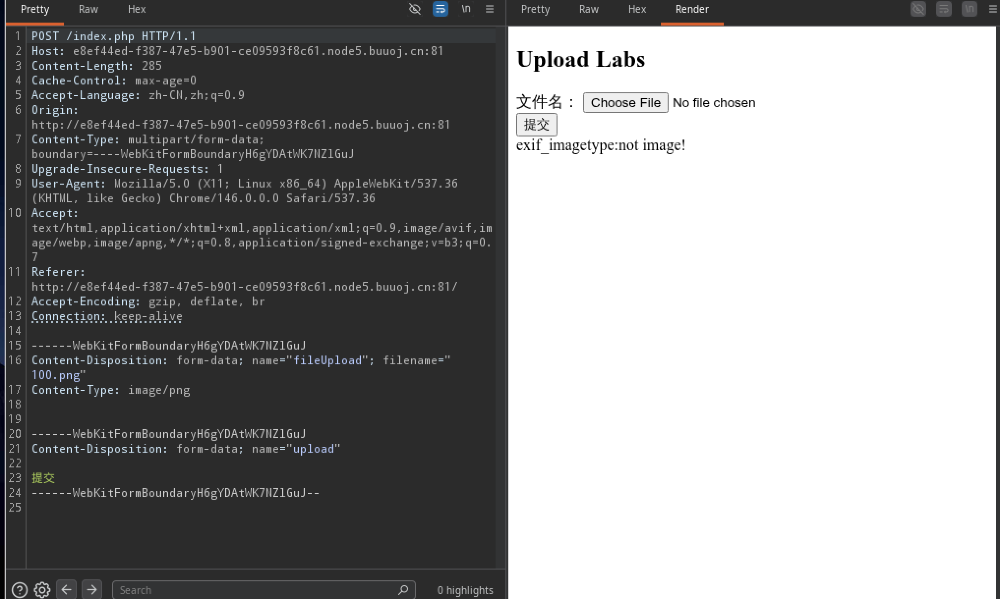

[SUCTF 2019]CheckIn

先上传一个空图片文件试试水，响应exif_imagetype:not image!
加个gif头上传成功
1 | |
看响应我们可以看到在我们上传文件所在文件夹中有我们上传的文件还有php文件，这里可以尝试采用.user.ini和.htaccess配置文件上传
测试是发现**<?**是被过滤了的
这里我直接上传一个.user.ini文件，然后访问index.php就得到flag了
1 | |
本博客所有文章除特别声明外，均采用 CC BY-NC-SA 4.0 许可协议。转载请注明来源 Lengkur！
相关推荐

2026-05-26
[GXYCTF2019]BabyUpload
打开题目就一文件上传点 先上传一个空的png文件试试水，响应文件类型上传的太暴露，改成jpeg变正常，返回了文件路径并可以访问 1/var/www/html/upload/edf5f3dd80e979848bb7f9eb670da2cd/100.png succesfully uploade...
2026-05-25
[MRCTF2020]你传你🐎呢
进来是一个文件上传点 123456POST /upload.php HTTP/1.1------WebKitFormBoundarycHfyDys9w8AAZN6lContent-Disposition: form-data; name="uploaded"; filena...
2026-05-27
[GXYCTF2019]BabySQli
这个题目，登录框做的很麻烦，抓个包在bp慢慢传，注入点是在search.php的post中 如果登录admin的化会响应wrong pass!，登录其他用户的化会响应wrong user! 原本是想用布尔盲注的，但结果测试发现小括号都被禁用了，所以这个题不是常见的sql注入了 在响应的注释中...
2026-05-26
[MRCTF2020]Ez_bypass
12345678910111213141516171819202122232425262728293031323334353637383940I put something in F12 for youinclude 'flag.php';$flag='MRCTF...
2026-05-26
[极客大挑战 2019]HardSQL
进来是一个表单，输入用户名和密码后跳转到一个另一个页面发现注入点 1/check.php?username=1&password=1 传个单引号发现有报错 1check.php?username='&password=1 我们这下面的payload就都注入到u...
2026-03-29
only_real_revenge
在源码找到一个账号密码 登录上去是一个文件上传点，显示身份user，功能不可用，判断是要提权admin 先退出，再登录一次抓包 先放行一次，会又抓到一个请求包，里面有一个token 直接用jwt-cracker，爆破出密钥，为“cdef” 先上传一个png文件 抓包后把后缀改成....